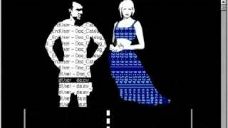

Week 3 Assignment
Web Work: A History of Internet Art - Rachel Greene
In December 1995 Slovenian artist accidentally stumbled upon the term “net.art” and began using it when talking about online art and communications. Eventually the term gained popularity amongst various other Internet communities. Net artists’ goal from the very beginning was to build “an equitable community in which art was conspicuously present in one’s everyday activities” (Greene 162). The creation of email allowed them to do just that, as anyone in any part of the world could contribute to the conversation as long as they had access to the Internet. Artists, enthusiasts, and technoculture critics were engaging in their shared interest of net art through ongoing dialogue. Net artists were now provided with a community in which they could talk and work together while remaining independent of any institutions and not be marginalized. Net.art was originally founded on “freewheeling, anti establishment”(Greene 190) values and unfortunately its growing popularity may threaten this foundation as it merges more with institutional spaces. Fortunately though, hope is not lost as the Internet has demonstrated passion and great determination to still create “hacktivist” artwork.
With Galleries Closed, A Moment for Net Artists to Shine - Andrew Dickson
At the start of the pandemic when national lockdowns started to go into effect, artists everywhere began bringing their art to their viewers’ screens in an attempt to recreate the gallery experience online. As with most aspects of our lives being centered around and solely accessed through the internet, art designed for the internet received a significant increase in attention and interest. Despite this new increase in popularity, some artists were creating these types of works decades ago. I find it fascinating how things that are currently popular have existed or at least been thought about for a very long time. Similar to the way that Vannevar Bush was able to conceptualize the iPhone and Siri decades before they were actually created, net artists were ahead of their time when selecting the medium in which to showcase their art as well as the concepts they incorporate into their work.
